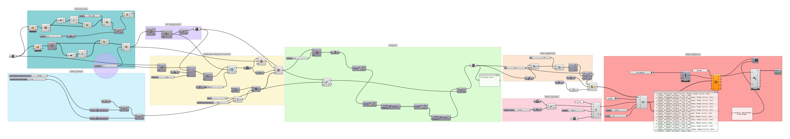
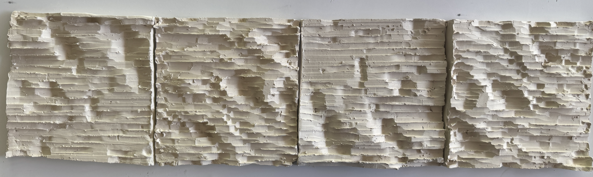

Overview
This project translates parametric geometry into physical surface relief through robotic fabrication. A low-relief topography is designed in Grasshopper using image-sampled height fields, then converted into robot-readable toolpaths via the Robots plugin for KUKA arm control. The output is a set of four ceramic clay tiles carved with a continuous striated landscape — a direct transcription from digital surface to material texture.
The workflow navigates the full design-to-fabrication pipeline: parametric form generation, toolpath simulation and collision checking, corner approach logic, and physical carving on unfired clay slabs in the GSD Robotics Lab.
Process
Grasshopper Simulation
Robotic Carving
Grasshopper Script

Grasshopper parametric definition — image-sampled height field to KUKA robot toolpath via Robots plugin
Before Glazing

Four ceramic clay tiles — carved low-relief surface before glaze firing
After Glazing
Glaze firing in progress